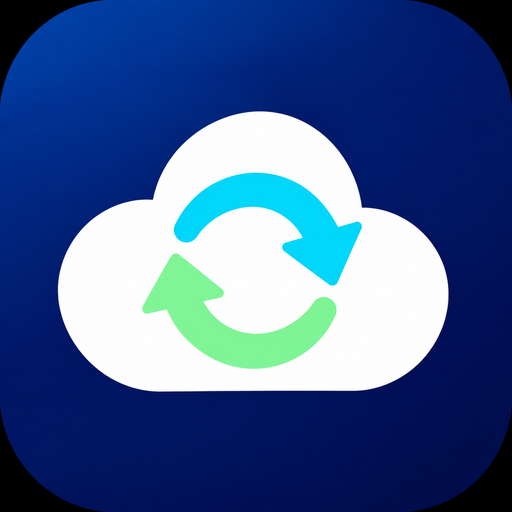

Personal-use applicationWee’s Personal rclone
Google Drive file transfers, syncing, and backups—controlled by the account owner.
About this application
Wee’s Personal rclone is a personal Google OAuth client operated by Wee (weeix) for use with rclone. It enables the operator to connect their own Google Drive account to rclone for personal file management and backups.
This is not a public service and does not offer account registration or access for other users. It is not affiliated with, endorsed by, or an official product of Google or the rclone project.
Google Drive access
After the owner authorizes access with Google, rclone runs on the owner’s devices or systems. Depending on the permissions granted and commands used, it can list, read, download, upload, create, modify, or delete Drive files, and export Google Workspace documents.
This website is informational only. It does not perform Google sign-in, receive OAuth tokens, or access Drive files.
Privacy & contact
Read the privacy policy for details about data use, storage, and revoking access.
For questions, use GitHub Issues. Issues are public: do not post credentials, tokens, private files, or other sensitive information.